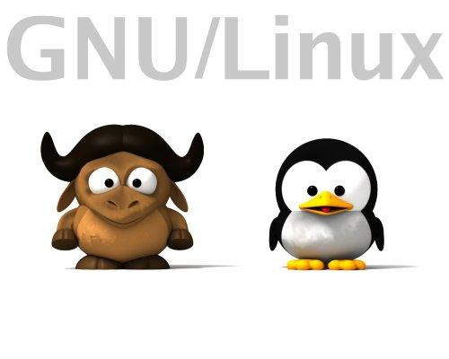
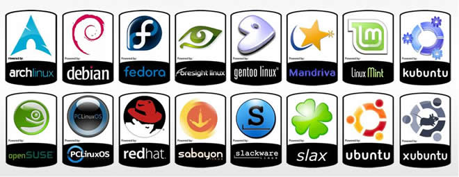
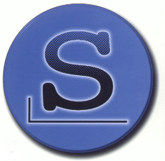
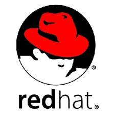
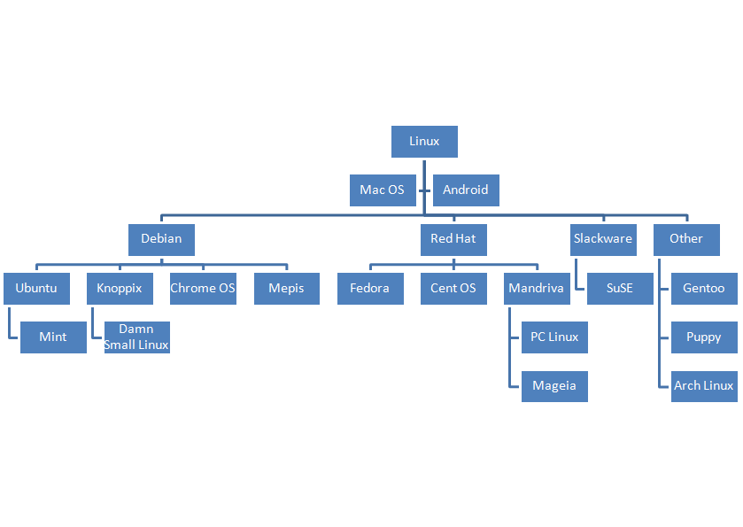

Linux
Entendiendo como trabaja

Creado por Carlos Huamaní / @carlosHS92
UNIX
Sistema operativo portable, multitarea y multiusuario; desarrollado, en principio, en 1969.
A lo largo de la historia ha surgido una gran multitud de implementaciones comerciales de UNIX. Los más importantes son:
- Solaris, uno de los más difundidos en el entorno empresarial y conocido por su gran estabilidad.
- AIX, el UNIX propietario de IBM
- Mac OS X, su diferencia marcada es que posee una interfaz gráfica propietaria llamada Aqua, y es principalmente desarrollada en Objective-C
¿Qué es GNU/Linux?
Es uno de los términos empleados para referirse a la combinación del núcleo o kernel libre similar a Unix denominado Linux con el sistema GNU.
A pesar de que Linux es el núcleo del sistema operativo, parte fundamental de la interacción entre el hardware y el usuario se maneja usualmente con las herramientas del proyecto GNU
Distribuciones
Agrupamiento del núcleo del sistema operativo Linux y otra serie de aplicaciones de uso general o no tan general. Las empresas que desarrollan las distribuciones de Linux están en su derecho al cobrar una cierta cantidad por el software que ofrecen.
Primeras Distros
- Slackware, una de las primeras distribuciones organizadas. Muy sencilla y primitiva.
 - Redhat, una de las distribuciones comerciales mas difundidas, de instalación relativamente amigable.
 - Debian, su base de voluntarios, su naturaleza no comercial y su modelo de desarrollo abierto la distingue de otras distribuciones del sistema operativo GNU.

Distros mas importantes y sus origines
Consola de Linux
Comandos básicos

Archivos y Directorios
- cd .. : retroceder un nivel.
- cd : ir al directorio raíz.
- cd -: ir (regresar) al directorio anterior.
- pwd: mostrar el camino del directorio de trabajo.
- ls -l: mostrar los detalles de ficheros y carpetas de un directorio.
- ls -a: mostrar los ficheros ocultos.
- mkdir carpeta1: crear una carpeta o directorio con nombre 'carpeta1'.
- mkdir -p /tmp/dir1/dir2: crear un árbol de directorios.
- rm -f archivo1: borrar el fichero llamado 'archivo1'.
- rmdir dir1: borrar la carpeta llamada ‘dir1′.
- mv dir1 new_dir: renombrar o mover un fichero o carpeta (directorio).
- cp file1 file2: copiar dos ficheros al unísono.
Encontrar Archivos
- find / -name file1: buscar fichero y directorio a partir de la raíz del sistema.
- find /home/user1 -name \*.bin: buscar ficheros con extensión '. bin' dentro del directorio '/ home/user1'.
Espacio de disco
- df -h: mostrar una lista de las particiones montadas.
- du -sh dir1: Estimar el espacio usado por el directorio 'dir1'.
Actualizador de paquetes YUM
- yum install package_name: descargar e instalar un paquete rpm.
- yum localinstall package_name.rpm: este instalará un RPM y tratará de resolver todas las dependencies para ti, usando tus repositorios.
- yum update package_name.rpm: actualizar todos los paquetes rpm instalados en el sistema.
- yum update package_name: modernizar / actualizar un paquete rpm.
- yum remove package_name: eliminar un paquete rpm
- yum list: listar todos los paquetes instalados en el sistema.
- yum search package_name: Encontrar un paquete en repositorio rpm.
- yum clean packages: limpiar un caché rpm borrando los paquetes descargados.
Mas comandos
- gedit archivo: abre el archivo usando el gedit
- nano archivo: abre el archivo usando el nano
- su root: cambia del usuario actual al usuario root
- cat: muestra el contenido de archivos.
- clear: limpia el terminal
- python: ingresamos a la consola de python
Para mas comandos visitar blog.desdelinux.net